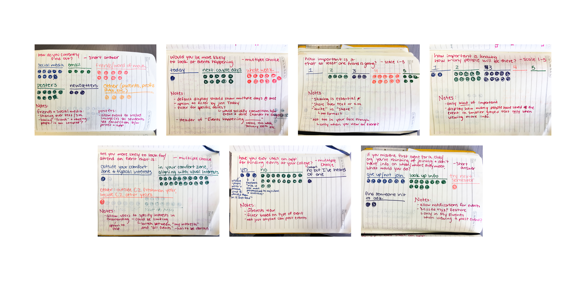
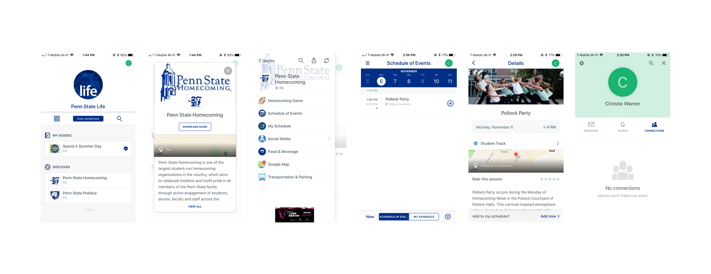
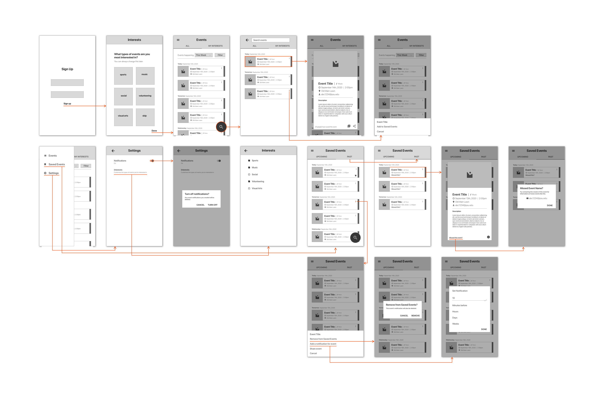
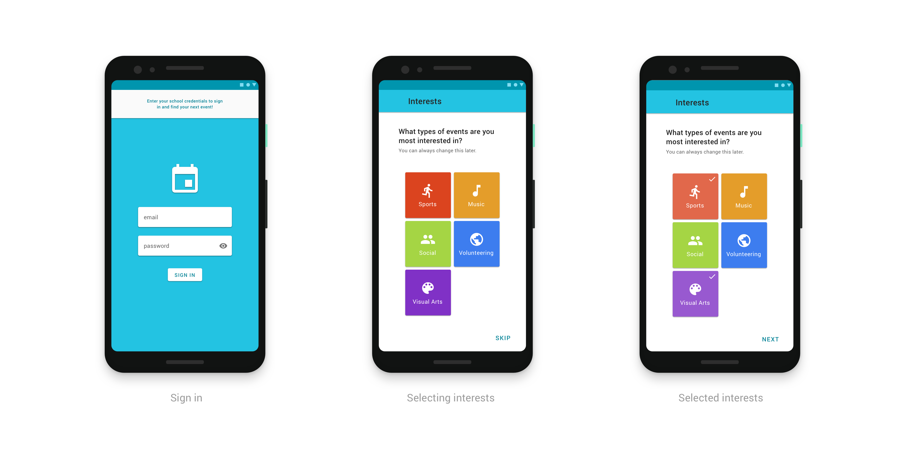
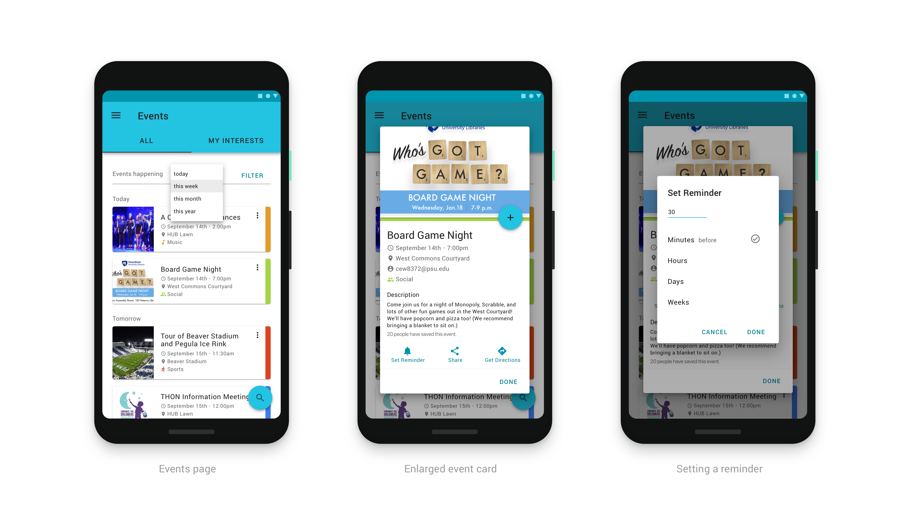
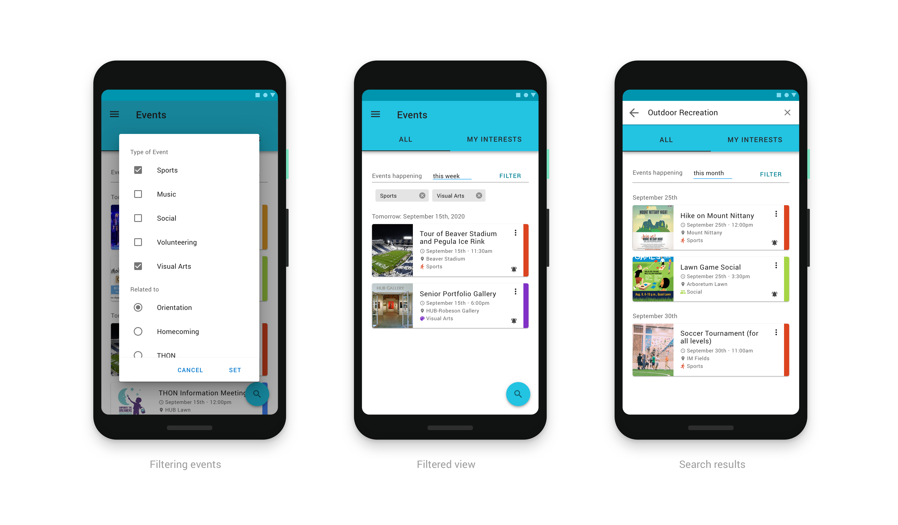
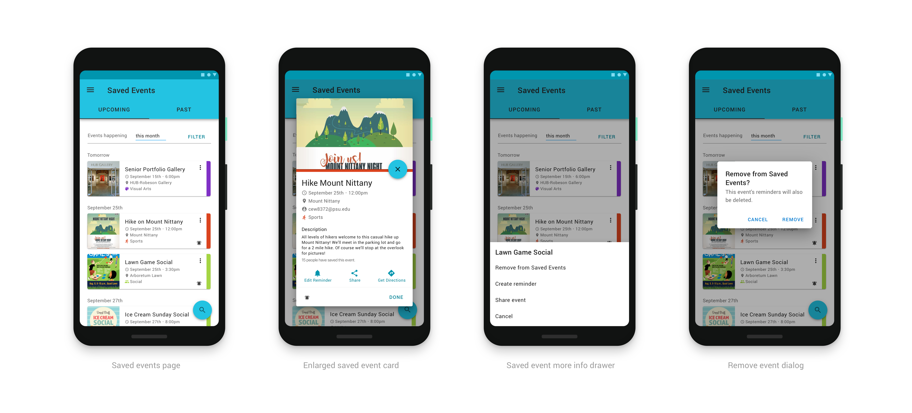
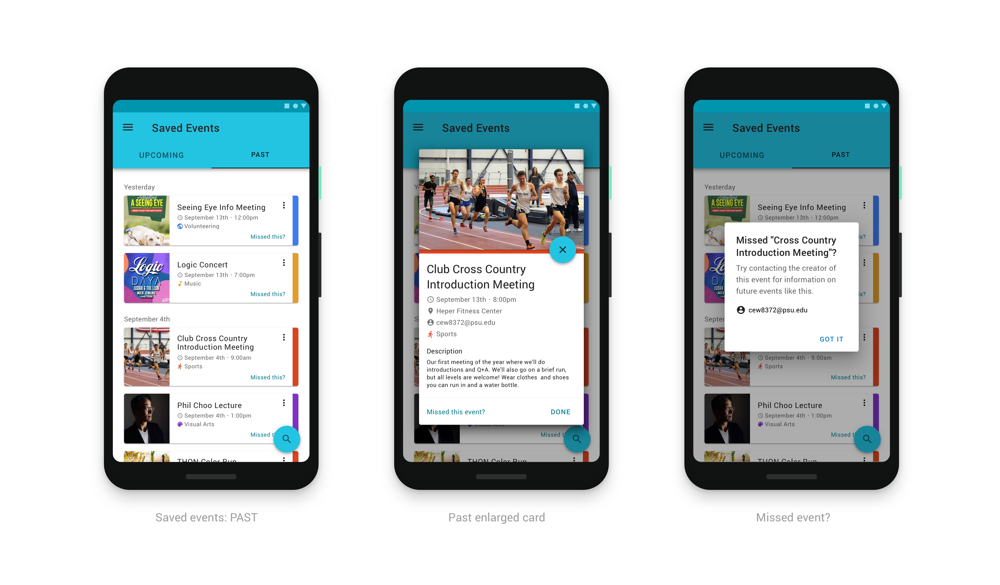
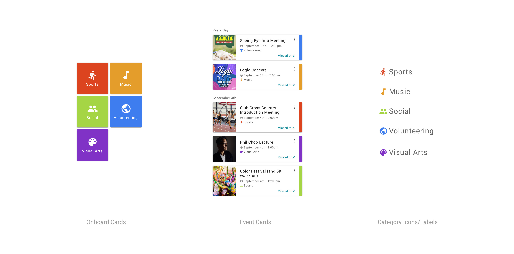
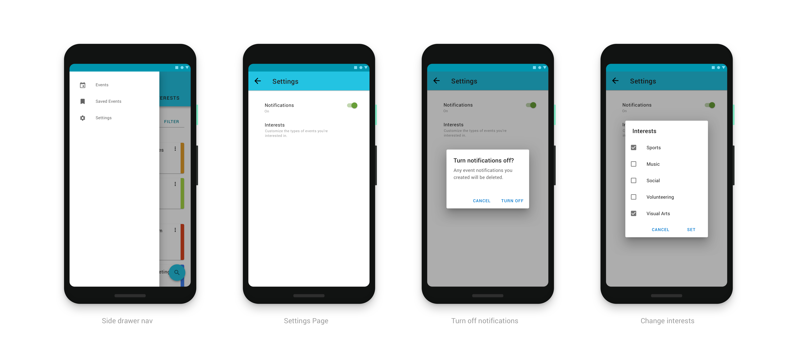

The User
College Students
Because the prompt specifically says that the Orientation Team is looking for help, it would make sense that the main users would be students already enrolled in the school. I considered limiting it to incoming freshmen, but I think this solution has much more potential to help all students at the school.
Research
After compiling a list of some of the essential features of the app (based on the prompt), I created a short survey to determine how students currently find events and what some of the problems are with this process.
I settled on the following questions for the survey.
- How do you currently find out about events at the start of the year (in college)?
- If you were browsing these events, would you be more likely to look at events happening today, the next couple of days, or the whole week?
- In deciding which of these events to attend, how important is it to you that at least one friend is going to the event?
- Are you more likely to look for/attend an event in college that is outside your comfort zone and typical interests or in your comfort zone, aligning with your usual interests?
- If you miss the first event for a club/organization you're thinking of joining (and you don't have info on where/when they meet), what are you most likely to do?
- Have you ever used an app for finding events at your college? If so, tell me a bit about your experience with it.
Findings
Though I was working with a small sample size (21 responses from 4 schools), the survey was still very helpful in determining what type of experience would make the most sense from the student perspective.

To summarize, students currently find out about events mainly through friends/word of mouth, posters, and social media, and there isn't an app that's commonly used. They are much more likely to look for events in their comfort zone and will look further ahead than today. It seems that they care only somewhat how many people are going to the event but care much more whether at least one of their friends will be there.
While a good portion of students are willing to look up club information if they miss an event, I found it surprising that a third of them would give up on joining the club entirely.
Competitive Analysis
The closest thing my school has to an app for discovering events is called Penn State Life. Though no one mentioned using it in the survey, I still wanted to do a brief analysis of it, especially since I didn't have a large sample size.

The user first must select a larger happening (like Homecoming, Parents Weekend, etc.) for which they want to "download" a guide. They can then open the guide and access all of the resources needed for the main event.
This is generally pretty well designed for users who aren't students here and need extra information like food and parking. The isolated "guide" concept also works well because, for instance, parents visiting for Parents' Weekend don't need to see unrelated events.
(There are, however some confusing aspects of the app, like student and alumni "tracks" that are sort of hidden, and a "Connections" tab in the profile that isn't referenced elsewhere.)
If this app were intended for students, the amount of information would be a bit excessive, making a large part of the app irrelevant and irritating to use. Also, based on the survey feedback, I found that students wanted to look at events more than a day in advance, and in fact I would reckon that adults would feel the same way if not more so.
Defining the Problem
I found in my research that students often find out about events in ways that aren't always optimal for getting them to actually go. Word of mouth is certainly an important way for information to travel in college, but it isn't at all conducive to remembering the details of an event, and the same often goes for posters. Social media is a bit better in this area, but as one student pointed out, it isn't customized for their school and interests.
Another issue lies in the fact that if they do miss an event and don't have any information about it (such as when and where a club meets), a lot of students will give up on joining. And while about two thirds are willing to look up information, I know from personal experience that at least at Penn State often times the club database has very outdated contact information if any at all.
Here are the specific problems I decided to address.
- Students attending an event relies on them remembering the details from what they hear and see.
- Missing an event greatly reduces the chance that a student will join the club/organization.
- Finding out about events is based on coincidence, and it is difficult for students to seek out this information due to a lack of organization and personalization.
Creating a Solution
Though the prompt for this exercise refers specifically to orientation events, it seems to me that it would be more useful to provide an experience for finding all events that students can then narrow down with filters.
Wireframes

Wireframing helped me to define the flow I wanted the app to have and what specific features to include based on my research. The flow generally starts the user with a scope as broad as possible and then lets them narrow down as they choose. This way they are never limited or discouraged from trying new things, and hopefully they will never mistake a narrowed view for the entire list of events. (This was something I encountered when using Penn State Life.)

Onboarding
The onboarding of the app is very simple, requiring the users to sign in with their school credentials (username & password) and allowing them to specify which types of events are of interest to them. Already, this screen gets the user familiar with the visual system used to differentiate these types throughout the app.
Events

This page displays all events happening this week as a default. The user has the option to change this to today, this month, or this year, but I found in my research that a week was generally the amount people wanted to look ahead.
Event cards display only the absolutely essential information of the event, and also display a photo. Since many students discover events from posters, the app would encourage creators to use a photo of their poster to create more of a connection in the user's mind.
When an event card is clicked on, it's enlarged showing contact information, a description, and action buttons. I used an FAB for Adding the event to Saved Events, because having a list of saved events is a big step towards solving Problem No. 1 (the need for students to remember event details). Adding a Reminder will also help users easily remember their events, and Sharing them will allow them to ensure they have a friend to go with if they so desire. Sharing is also a bit of a physical version of word of mouth. I added a Get Directions action too to have a smooth transition from the app to Maps for anyone who is unsure.
Finally this card displays how many people have saved it underneath the description. I didn't want this to be too prominent, since a good portion of feedback indicated that it's not super important, but it clearly wasn't entirely irrelevant either.
While this card gives a lot of info, I was careful to not add too much or make it too complicated, remembering students don't need as much info as a parent.

The user can also filter events based on their type (the five categories) or what they're related to (Orientation, Homecoming, etc.), adding another layer of personalization to the app.
This page has a Search FAB to emphasize that users have a large database of events at their fingertips (to solve Problem No. 3 - lack of an organized event-centered interface), and if they've heard of an event going on, it's probably on this app. This contrasts sharply with the current solution of social media, which is not at all created for the sole purpose of event-browsing.
Users can also view either All Events or only events in their Interests. This personalizes the experience even more, and provides a quick way to filter out what they aren't interested in. (The default is All Events so that the user starts with their options wide open and also avoids confusion of some events not appearing.)
Saved Events

This is very similar to the previous screens, but of course now displays events saved by the user instead of all events.
I made some minor changes, like a Remove FAB on the enlarged card, but the most important is the addition of "Upcoming" and "Past" tabs.

In order to further relieve Problem No. 2 (likelihood of students to give up after missing a club's first event), I added the Past tab to allow users to look back on events they may have missed. If they did, a button labeled "Missed this?" simply provides them with the contact info of the creator, gently urging them to not "give up." This feature may not be available for certain one-time events like concerts, but the ability to look at past saved events could still serve as a reminder of what to look for/attend in the next semester/year.
Visual System

It was important to me that there were multiple ways users can recognize the different types of events, especially since this was emphasized in the exercise. To do this I reinforced the color system immediately in the onboarding and continued this pattern throughout with a stripe and colored icons on the event cards. The icons (also carried from onboarding) and their respective labels aim to make the system more accessible, not relying solely on colors. Whether the users recognize the icon or the color, it's a very scannable system giving them information about the event right away.
Settings

Although there are only three navigation items in the app, I opted for a side drawer menu instead of the bottom nav. I chose this because the main gesture the user will be using is scrolling, and I wanted there to be as much screen space as possible devoted to events so that it doesn't feel like scrolling takes forever.
The settings are fairly straightforward simply allowing the user to turn on/off notifications entirely and also to change the interests they entered (or did not enter) in the onboarding. Since the main user is a college student, their interests are very much subject to change, so not allowing them to do that wouldn't make much sense. (Being able to say in the onboarding "You can always change this later" also aims to make the user feel more comfortable and less hesitant to add interests.)